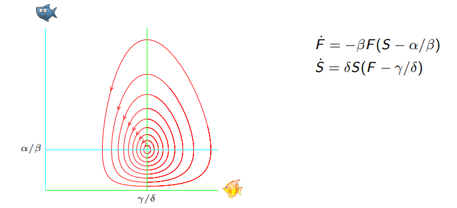

Ordinary differential equations

This repository contains material for a second course on ordinary
differential equations. The first half is about ODEs in the plane,
focusing on phase portraits, linearisation and stability. The
second half is about second order linear ODEs including power series
methods and Sturm-Liouville theory.